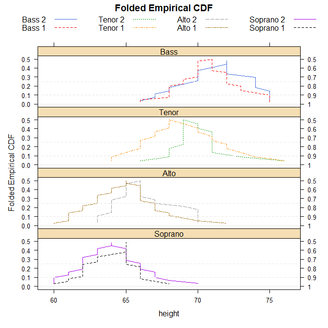

Homepage: http://kwstat.github.io/mountainplot/
Repository: https://github.com/kwstat/mountainplot
Installation
# Install the released version from CRAN:
install.packages("mountainplot")
# Install the development version from GitHub:
install.packages("devtools")
devtools::install_github("kwstat/mountainplot")Usage
require(mountainplot)
data(singer, package = "lattice")
parts <- within(singer, {
section <- voice.part
section <- gsub(" 1", "", section)
section <- gsub(" 2", "", section)
section <- factor(section)
})
# Change levels to logical ordering
parts$section <- factor(parts$section,
levels=c("Bass","Tenor","Alto","Soprano"))
mountainplot(~height|section, data = parts,
groups=voice.part, type='l',
layout=c(1,4),
main="Folded Empirical CDF",
auto.key=list(columns=4), as.table=TRUE)

mountainplot